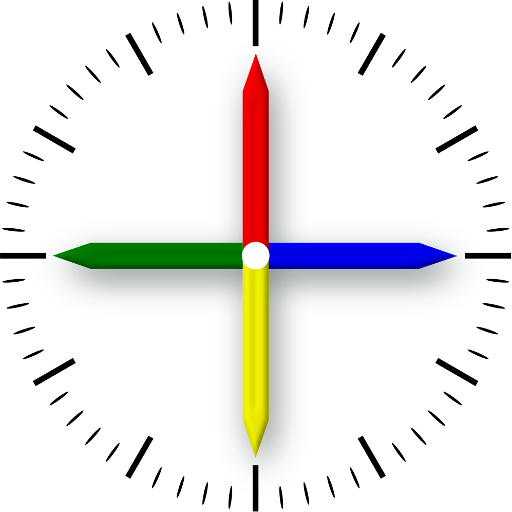
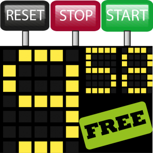

Aplicaciones para Android
‘Brújula Peregrina’ es una aplicación para Android, gratis y sin publicidad, pensada como herramienta minimalista para el Camino de Santiago.
Muestra brújula con nivel central, rumbo y distancia en tiempo real hasta la Catedral de Santiago, además de altitud, velocidad y tiempo restante para el atardecer.
Incluye herramientas prácticas para el peregrino: luz roja de albergue, linterna con control de intensidad, contador diario de sellos para la credencial y envío rápido de coordenadas.
‘Marcas Natacion’ es una aplicación para android, gratis y sin publicidad, orientada a la Natación, y que utiliza datos públicos de la Real Federación Española de Natación -RFEN-.
Provee información sobre los Campeonatos más importantes para el año en curso (con las mínimas para acceder a estos) para todas las categorías.
Provee información sobre los Clubs de natación de España (una bbdd de más de 1000 clubs).
Provee un cronometro para medir hasta 5 nadadores a la vez que puede funcionar como un cronómetro normal, o bien, contra una marca definida (por ejemplo una mínima).
Aplicación descontinuada (ya no disponible en Play Store).

‘Swimming Wall Clock’ es una aplicación para android, gratis y sin publicidad, y decorativa.
Solo muestra un reloj de piscina.
Podría utilizarse en alguna piscina que cuente con un monitor en el cual se pueda conectar una tablet o un teléfono android.
Tiene la opción de mostrar la hora o no.
La pantalla permanece despierta mientras la aplicación se está ejecutando en primer plano.
Aplicación descontinuada (ya no disponible en Play Store).

‘9.58 Crono Free’ es un “Cronometro” para Android, gratis y sin publicidad, cuyo nombre está inspirado en la actual marca mundial de los 100 mts de atletismo, realizada por Usain Bolt el 16 de agosto de 2009.
Cuenta hasta 9:59:59.99 hs (9hs 59 min 59 seg 99 centésimas).
Aplicación descontinuada (ya no disponible en Play Store).
App4oid.com realiza aplicaciones para móviles usando Basic4Android.
Si quieres donar para que pueda seguir programando, debes hacerlo en el siguiente enlace: DONAR AQUÍ